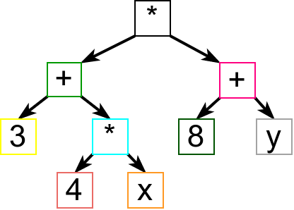

Парсирање и рекурзивни спуст¶
Као што смо видели, регуларни изрази су веома користан формализам и
њихова уграђена подршка у савременим програмским језицима заиста
олакшава велики број задатака обраде текста. Са друге стране,
регуларни изрази имају своја ограничења и постоји велики број корисних
језика (скупова ниски) који се не могу описати регуларним
изразима. Типичан пример су аритметички изрази, попут, на пример,
израза (3+4)*(5+6). Структура исправно записаних аритметичких
израза је превише компликована да би могла да се опише регуларним
изразима. Регуларни изрази чак не могу да опишу ни само исправност
заградa унутар ниске. Наиме, број затворених заграда мора да одговара
броју отворених заграда (и додатно, заграде морају да буду исправно
угнежђене), а регуларни изрази немају могућност упаривања броја
појављивања подизраза.
У поглављу које следи ћемо описати један изражајни начин за опис синтаксе језика. У питању су тзв. формалне граматике које нам дају начин да опишемо синтаксу суштински рекурзивних објеката, какви су, на пример, аритметички изрази. Као што неформалне граматике одређују синтаксички исправне реченице природних језика, тако формалне граматике прецизно одређују синтаксички исправне „реченице” програмских језика, тј. исправне делове програмског кода или неког другог формалног садржаја.
Упознаћемо и технике програмирања које на основу граматичког описа могу да провере исправност датог текста (тј. да провере да ли се дати текст уклапа у дати граматички опис) и да дати текст рашчлане на делове у складу са датом граматичком структуром, па и обраде на неки начин (на пример, израчунају вредност аритметичког израза). Процес синтаксичке анализе датог текста тј. провере да ли је текст у складу са формалним граматичком описом и одређивање његове структуре тј. рашчлањавање на саставне делове назива се парсирање а програм који то ради назива се синтаксички анализатор или парсер.
Кренимо од формалног граматичког описа аритметичких израза. Наредна слика јасно показује њихову рекурзивну природу: сложенији изрази се граде од једноставнијих израза (применом оператора и функција), при чему су најелементарнији изрази променљиве и константе.
Размотримо, на пример, структуру аритметичког израза
(3+4*x)*(8+y).
Зашто је он исправан аритметички израз? Зато што је добијен применом оператора
*на једноставније изразе(3+4*x)и(8+y). Сваки исправан израз на претходној слици је уоквирен правоугаоником одређене боје. Полазни израз је исправан, па је уоквирен црном бојом и види се да се он састоји од два исправна подизраза (једног уоквиреног црвеном, а другог уоквиреног плавом бојом).Зашто је
(3+4*x)исправан израз? Зато што је добијен стављањем исправног израза3+4*xу заграде (тај подизраз је на слици уоквирен зеленом бојом).Зашто је израз
3+4*xисправан? Зато што је добијен применом оператора+на исправне подиразе3и4*x.Зашто је израз
3исправан? Зато што је у питању бројевна константа, а свака бројевна константа предтавља исправни аритметички израз.Зашто је израз
4*xисправан? Зато што је добијен применом оператора*на исправне изразе4иx.Зашто је израз
4исправан? Зато што је у питању бројевна константа.Зашто је израз
xисправан? Зато што је у питању променљива, а свака променљива је исправан аритметички израз.
На веома сличан начин се доказује и да је израз (8 + y) исправан
аритметички израз.
Структура датог израза се може представити и дрветом, као на следећој слици.
Приметимо да се из дрвета јасно види однос оператора, па нема потребе приказивати заграде. Резултат рада парсера је често неко дрво које личи на ово приказано на слици. Такво дрво се назива дрво апстрактне синтаксе (енгл. abstract syntax tree, AST).
Покушајмо сада да опишемо која су то правила која смо користили да бисмо закључили да је нешто исправан аритметички израз?
Свака константа је исправан аритметички израз.
Свака променљива је исправан аритметички израз.
Ако је
izrazисправан аритметички израз, тада је и(izraz)исправан аритметички израз.Ако су
izraz1иizraz2исправни аритметички изрази, тада је иizraz1 + izraz2исправан аритметички израз.Ако су
izraz1иizraz2исправни аритметички изрази, тада је иizraz1 * izraz2исправан аритметички израз.
Да би оваква дефиниција израза била комплетна, набројаним правилима треба придружити још једно, а то је: исправни аритметички изрази се могу добити само применом набројаних правила. Наравно, изрази могу да буду дефинисани и обухватније, тј. могуће је аналогно дефинисати и правила за друге операторе (одузимање, дељење), али једноставности ради у наставку ћемо се често задржати само на сабирању и множењу.
Рекурзивна дефиниција коју смо приказали потпуно прецизно карактерише исправне аритметичке изразе. Дефиниције овог типа називамо контекстно слободним граматикама. Додуше, граматике се често пишу у доста компактнијем запису (без пуно речи, само симболички). Тако би се претходна граматика могла записати на следећи начин.
izraz -> konstanta
izraz -> promenljiva
izraz -> ( izraz )
izraz -> izraz + izraz
izraz -> izraz * izraz
Граматика се састоји од скупа незавршних симбола (у овом случају је то
само симбол izraz) и скупа завршних симбола (у овом случају су то
заграде, плус, пута, константа и променљива). Подразумевамо да је низ
карактера са улаза већ рашчлањен на низ завршних симбола
(тзв. токена) тј. да приликом имплементације синтаксичког
анализатора не морамо водити рачуна о детаљима препознавања појединих
завршних симбола. Дакле, у претходној граматици подразумевамо да се
зна шта је променљива и шта је константа и да умемо да их препознамо
када се јаве на улазу нашег програма. Оне, на пример, могу бити
описане коришћењем регуларних израза, попут регуларног израза
[a-z][a-z0-9]* којим се често описују идентификатори који
представљају називе променљивих. Део програма који се бави груписањем
појединачних карактера у завршне симболе наше граматике зове се
лексички анализатор. Упрошћено говорећи, задатак лексичког
анализатора је да од појединачних карактера (слова) направи речи, а
задатак синтаксичког анализатора тј. парсера је да провери да ли те
речи граде исправне реченице (реченице које су у складу са жељеном
граматиком).
На основу граматичких правила изводе се исправне ниске које имају
жељену структуру. На пример, израз konstanta * promenljiva је
исправан јер се може извести на следећи начин.
izraz => izraz * izraz => konstanta * izraz => konstanta * promenljiva
Извођење креће од неког почетног незавршног симбола и у сваком кораку се незавршни симболи мењају десним странама граматичких правила, све док не остану само завршни симболи.
Често се за запис граматика користи тзв. Бекус-Наурова нотација, BNF (каже се скраћено и Бекусова нотација).
<izraz> ::= <konstanta>
<izraz> ::= <promenjiva>
<izraz> ::= "(" <izraz> ")"
<izraz> ::= <izraz> "+" <izraz>
<izraz> ::= <izraz> "*" <izraz>
Постоји и такозвана проширена Бекусова нотација (EBNF) која на неки начин комбинује контекстно-слободне граматике са неким конструкцијама које су нам познате из регуларних израза. На пример,
<promenljiva> :: <slovo> {<slovo> | <cifra>}
У овој нотацији усправна црта означава „или”, а витичасте заграде означавају нешто што се понавља нула или више пута (слично као звездица код регуларних израза).
Поставља се питање како од граматичког описа језика можемо добити програмски код који проверава исправност ниске (проверу да ли она припада том језику тј. да ли је у складу са датим граматичким описом). Видели смо да савремени програмски језици нуде ту могућност за описе дате регуларним изразима. Нажалост, то није случај за граматике, мада постоји алат који пружа могућност аутоматског генерисања C# кода за проверу само на основу граматике коју корисник уноси (нпр. ANTLR, GPPG/GPLEX, Coco/R). Са друге стране, постоје технике које омогућавају да се релативно једноставно добије програмски код на основу граматичкиих описа и у наставку овог поглавља ћемо их укратко описати.
Потпуно заграђени изрази¶
Циљ нам је да прикажемо како написати програм који анализира исправност и израчунава вредности аритметичких израза. То ћемо урадити постпуно, тако што ћемо прво решити упрошћен случај потпуно заграђених израза. То су изрази који имају заграде око сваке примене аритметичког оператора. На пример,
(((3*5)+(7+(2*1)))*4)
Чињеница да је израз потпуно заграђен олакшава израчунавање, јер нема потребе да водимо рачуна о приоритету и асоцијативности оператора. Такви изрази се описују наредном, веома једноставном граматиком.
<izraz> :: <cifra>
<izraz> :: '(' <izraz> '+' <izraz> ')'
<izraz> :: '(' <izraz> '*' <izraz> ')'
Приметимо још једно значајно упрошћење - изрази су формирани само од цифара и вишецифрени бројеви нису допуштени.
Када на овом, упрошћеном случају упознамо основне технике, применићемо их и у општем случају.
Рекурзивни спуст¶
Пошто је граматички опис суштински рекурзиван, један природан начин да се приступи решавању проблема је да и програм користи рекурзију. Обрада структурираног текстуалног улаза рекурзивним функцијама се назива рекурзивни спуст (енгл. recursive descent). Дефинишемо рекурзивну функцију чији је задатак да израчуна вредност дела ниске који представља исправан аритметички израз. Он може бити или број или израз у заградама.
Случај када је израз број је излаз из рекурзије и израчунавање вредности таквог израза је тривијално, јер је вредност израза једнака вредности тог броја тј. цифре.
У случају израза у заградама читамо прво отворену заграду, затим рекурзивним позивом израчунавамо вредност првог операнда, након тога читамо оператор, затим рекурзивним позивом израчунавамо вредност другог операнда, након тога читамо затворену заграду и израчунавамо вредност познајући оператор и вредност оба операнда.
Ниска која се обрађује не мора да се мења током рекурзивних позива,
међутим, рекурзивна функција у сваком рекурзивном позиву обрађује део
ниске, који креће од неке позиције. Нека се та позиција чува у
променљивој i. Ако, на пример, израз облика (izraz+izraz)
почиње на некој позицији i, тада први рекурзивни позив треба да
анализира ниску од позиције i+1 (јер се отворена заграда
прескаче). Након завршетка првог рекурзивног треба очитати оператор,
међутим не знамо на којој се позицији он налази. Кључна идеја је да
наша рекурзивна функција добије додатни задатак: задатак рекурзивне
функције је да прочита израз који почиње на позицији i, да
израчуна његову вредност и да променљиву i промени тако да њена
нова вредност указује на позицију ниске непосредно након израза који
је прочитан. Променљива i мења своју вредност кроз рекурзивне
позиве. Стога ћемо је преносити по референци, тако да представља и
улазну и излазну величину функције.
Имајући све ово у виду, једноставно можемо направити имплементацију у језику C#.
Коришћење стека¶
Као што је већ познато, рекурзија се може елиминисати коришћењем стека. На стек можемо стављати све симболе док не наиђемо на затворену заграду. У том тренутку:
са стека скидамо два операнда, оператор и отворену заграду;
израчунавамо вредност израза добијеног применом оператора на операнде;
на стек стављамо резултат.
Размотримо пример израза ((3+4)*(5+6)). Обрађујемо редом један по
један карактер. До прве затворене заграде, на стек стављамо један по
један симбол и стек тада изгледа овако.
4 <- vrh
+
3
(
(
----
stek
Пошто смо наишли на затворену заграду покрећемо израчунавање и долазимо до следећег стања:
7 <- vrh
(
----
stek
Након тога настављамо читање до наредне затворене заграде. Пре њеног читања, стек овако изгледа:
6 <- vrh
+
5
(
*
7
(
----
stek
Наилазимо на прву од две затворене заграде, покрећемо израчунавање и долазимо до следећег стања.
11 <- vrh
*
7
(
----
stek
На крају долазимо до друге затворене заграде, покрећемо израчунавање и долазимо до стања:
77 <- vrh
----
stek
Примећујемо да се тражена вредност израза налази на стеку вредности.
Постављање отворених заграда на стек у овом алгоритму не доприноси ничему корисном, па се може прескочити (на стек можемо стављати само бројеве и операторе).
Имплементацију овог алгоритма у језику C# отежава то што није јасно који тип података се поставља на стек (за разлику од, на пример, језика Python у коме листе могу садржати истовремено податке различитог типа, у језику C# сви елементи колекције морају имати јединствен тип). Зато ћемо уместо једног у програму одржавати два стека: један на који ћемо постављати бројеве (вредности операнада), а на други карактере (ознаке оператора).
Када наиђемо на цифру постављаћемо је на стек вредности операнада.
Када наиђемо на оператор, постављаћемо га на стек оператора.
Када наиђемо на затворену заграду, тада ћемо скидати два операнда са стека вредности операнада, оператор са стека оператора, применићемо оператор на операнде и резултат стављати на стек вредности операнада.
Размотримо пример израза ((3+4)*(5+6)). Обрађујемо редом један по
један карактер. Отворене заграде можемо да прескочимо, а када наићемо
на карактер 3, стављамо га на стек вредности. Након тога +
стек оператора, а затим 4 на стек вредности. У том тренутку
стекови изгледају овако:
4
3 +
--------- ---------
vrednosti operatori
Пошто смо наишли на затворену заграду покрећемо израчунавање и долазимо до следећег стања:
7
--------- ---------
vrednosti operatori
Након тога на стек оператора постављамо оператор множења *.
7 *
--------- ---------
vrednosti operatori
Отворену заграду прескачемо, а затим на стек вредности стављамо 5,
на стек оператора +, па на стек вредности 6. У том тренутку
стекови изгледају овако.
6
5 +
7 *
--------- ---------
vrednosti operatori
Наилазимо на прву од две затворене заграде, покрећемо израчунавање и долазимо до следећег стања.
11
7 *
--------- ---------
vrednosti operatori
На крају долазимо до друге затворене заграде, покрећемо израчунавање и долазимо до стања:
77
--------- ---------
vrednosti operatori
Примећујемо да се тражена вредност израза налази на стеку вредности.
Имплементација ове технике је дата у следећем C# коду. Користимо
библиотечку имплементацију стека (класа Stack са методима Push
за постављање елемената на стек и Pop за скидање елемента са стека).
Израчунавање вредности аритметичких израза¶
Пређимо сада на израчунавање вредности произвољних, а не само потпуно заграђених израза. Постоји неколико начина да се то уради.
Рекурзивни спуст¶
Кренимо од рекурзивног спуста. Проблем са граматиком
<izraz> ::= <konstanta>
<izraz> ::= <promenjiva>
<izraz> ::= "(" <izraz> ")"
<izraz> ::= <izraz> "+" <izraz>
<izraz> ::= <izraz> "*" <izraz>
је то што се у њој дефинисани оператори + и * никако не разликују
по свом приоритету. Размотримо зато шта треба да се промени у дефиницији
граматике, да бисмо узели у обзир и приоритет оператора. Пошто је сабирање
операција нижег приоритета, на највишем нивоу сваки израз се састоји од
једног или више сабирака. На пример:
2+3*4има два сабирка,2и3*4(3+4)*2+(5+2)*3+1има три сабирка,(3+4)*2,(5+2)*3и1(1+2)*(3+4)има само један сабирак (без обзира што његови подизрази имају више сабирака).
Сваки сабирак се састоји од једног или више чинилаца. Сваки чинилац је
или број или израз у заградама. На пример, израз (3+4)*2 има два
чиниоца, док 1 и (4*2+5) имају само један чинилац. Тиме се
долази до следеће граматике у EBNF (сабирци су именовани називом терм,
а чиниоци називом фактор).
<izraz> ::= <term> {"+" <term>}
<term> ::= <faktor> {"*" <faktor>}
<faktor> ::= <broj> | "(" <izraz> ")"
Подсетимо се, витичасте заграде у EBNF означавају да се оно у њима јавља нула или више пута (на пример, израз је један сабирак иза којег могу да се нула или више пута јаве плус и неки нови сабирак.
Граматику можемо врло једноставно да проширимо операторима одузимања и дељења, поштујући при томе приоритет свих оператора.
<izraz> ::= <term> {("+"|"-") <term>}
<term> ::= <faktor> {("*"|"/") <faktor>}
<faktor> ::= <broj> | "(" <izraz> ")"
Надаље, под појмом терм поред сабирака подразумевамо и умењеник и умањилац, а под појмом фактор поред чинилаца подразумевамо и дељеник и делилац.
Вредност израза рачунамо техником рекурзивног спуста. Сваки нетерминал граматике ћемо представити посебном функцијом, која чита део израза који настаје из тог нетерминала и враћа вредност тог дела израза. Функцији се по референци преноси индекс i који означава почетак дела ниске s који се анализира. На крају рада функције овај индекс се премешта иза прочитаног дела ниске. Променљива ok која се такође преноси по референци је индикатор да ли је дошло до грешке дељења нулом током израчунавања вредности израза. Још једно проширење у односу на претходни, упрошћени програм је то што допуштамо да у изразима учествују и вишецифрени бројеви (а не само једноцифрени). Читање и одређивање вредности бројева је ручно имплементирано, а за вежбу вам остављамо да покушате да за ово употребите регуларне изразе.
Приметимо да се у претходном програму користи узајамна рекурзија
(функција izraz позива функцију term која позива функцију
faktor, а која позива функцију izraz).
Коришћење стека¶
Проблем се решава слично као код потпуно заграђених израза, али овај пут се мора обраћати пажња на приоритет и асоцијативност оператора.
Једноставности ради претпоставимо прво да не израчунавамо вредност
израза, већ само израз пребацујемо у тзв. постфиксни облик који нам
даје веома једноставно упутство како би се вредност израза могла
израчунати (уз коришћење помоћног стека). У постфиксном облику,
оператор се не пише између, него након операнада. На пример, постфиксни
облик израза (3+4)*5 је 34+5*. Захваљујући оваквом редоследу
писања, у постфиксном облику израза заграде нису потребне. Погледајмо
на примеру истог израза како тече израчунавање вредности на основу
постфиксног записа: прво на стек вредности (овде је то једини стек)
треба ставити бројеве 3 и 4; затим, наиласком на знак + те две
вредности треба скинути са стека и заменити њиховим збиром (бројем
7); затим се на стек ставља и број 5, а наиласком на знак * са стека
се скидају вредности 7 и 5 и замењују њиховим производом (бројем 35).
Изрази се обично записују у једном од три наредна облика:
постфиксни облик (на пример,
34+5*) је, видели смо, облик у ком се оператор исписује након својих операнадаинфиксни облик (на пример,
(3+4)*5) је класичан облик записа израза и у њему се оператор записује између својих операнадапрефиксни облик (на пример,
*+345) је облик у коме се оператор записује испред својих операнада. Овај облик је веома погодан за парсирање, јер се структура израза (водећи оператор) може открити већ на самом почетку (у примеру се види да је у питању „производ збира бројева 3 и 4 и броја 5”).
Превођење потпуно заграђених израза у постфиксни облик би било јако једноставно:
када наиђемо на број преписујемо га на излаз;
када наиђемо на оператор стављамо га на стек;
када наиђемо на затворену заграду скидамо оператор са стека и преписујемо га на излаз.
Заиста, потпуно заграђена форма претходног израза је
((3+4)*5). Отворене заграде прескачемо, преписујемо 3 на
излаз, стављамо + на стек, преписујемо 4 на излаз и онда,
пошто смо наишли на затворену заграду пребацујемо + са стека на
излаз. Након тога на стек стављамо *, преписујемо 5 на излаз и
при наиласку на другу затворену заграду пребацујемо * са стека на
излаз, чиме добијамо постфиксни облик 34+5*. Ако излаз заменимо
стеком вредности и пребацивање оператора на излаз заменимо њиховом
применом на стеку вредности, добићемо алгоритам који израчунава
вредност израза.
Пређимо сада на случај израза који не мора бити потпуно
заграђен. Кључна дилема је шта радити у ситуацији када се прочита
op2 у изразу облика i1 op1 i2 op2 i3 где су i1, i2 и
i3 три израза (било броја било израза у заградама), а op1 и
op2 два оператора. У том тренутку на излазу ће се налазити израз
i1 преведен у постфиксни облик и иза њега израз i2 преведен у
постфиксни облик, док ће се оператор op1 налазити на врху стека
оператора. Уколико op1 има виши приоритет од оператора op2 или
уколико им је приоритет исти, али је асоцијативност лева (врши се
израчунавање слева надесно, што је прилично уобичајено), тада је
потребно прво израчунавати израз i1 op1 i2 тиме што се оператор
op1 са врха стека пребаци на излаз. У супротном (ако op2 има
виши приоритет или ако је приоритет исти, а асоцијативност десна)
оператор op1 остаје на стеку и изнад њега се поставља оператор
op2.
Наредна анимација приказује примену овог алгоритма на једном примеру.
Уместо превођења у постфиксни облик, можемо одмах израчунавати вредност израза (тако што се уместо текстуалног излаза користи стек вредности).

{kind=link}
{kind=link}
У наставку је приказана имплементација овог алгоритма у језику C#. И
стек вредности и стек оператора су представљени библиотечком
колекцијом Stack (метода Push ставља елемент на врх стека,
Pop скида елемент са врха стека, Peek очитава елемент са врха
непразног стека, али га не скида са стека, док својство Count
означава тренутни број елемената на стеку и користи се да би се
проверило да ли је стек празан).
Ово је један од многих алгоритама које је извео Едсгер Дијкстра и назива се на енглеском језику Shunting yard algortihm, што би се могло слободно превести као алгоритам сортирања железничких вагона. Замислимо да израз треба да пређе са једног на други крај пруге. На прузи се налази споредни колосек (пруга је у облику слова Т и споредни колосек је усправна црта). Делови израза прелазе са десног на леви крај (замислимо да иду по горњој ивици слова Т). Бројеви увек прелазе директно. Оператори се увек задржавају на споредном колосеку, али тако да се пре него што оператор уђе на споредни колосек са њега на излаз пребацују сви оператори који су вишег приоритета у односу на текући или имају исти приоритет као текући а лево су асоцијативни. И отворене заграде се постављају на споредни колосек, а када наиђе затворена заграда, са споредног колосека се уклањају сви оператори до отворене заграде. Када се исцрпи цео израз на десној страни, сви оператори са споредног колосека се пребацују на леву страну. Јасно је да споредни колосек има понашање стека, тако да се у имплементацији користи стек (на њега се стављају оператори).
Цртање математичких функција¶
У наставку ћемо приказати како се технике које смо до сада научили могу применити да би се направио наизглед прилично напредан програм који црта график математичке функције једне променљиве коју корисник уноси у облику ниске карактера. У овом програму ћемо употребити технике програмирања које се уче у склопу предмета „Објектно-оријентисано програмирање”: дефинисање класа, објеката, наслеђивање, апстрактне класе, полиморфизам. Стога ти саветујемо да се, ако је потребно, подсетиш тих техника када год је потребно, док читаш наредни текст. Ако те технике још ниси научио, одложи читање остатка овог поглавља за касније.
Основна идеја је да на основу унетог текстуалног описа математичке
функције формирамо у меморији репрезентацију те функције у облику који
омогућава да се веома једноставно израчунава њена вредност за задату
вредност променљиве x. Најзгодније је да то буде нека дрволика
репрезентација, са различитим врстама чворова: чворовима који
представљају контанте, променљиве, бинарне операције (плус, минус,
пута, подељено), позиве функција (корен, синус, логаритам)
итд. Најзгодније је сваку врсту чвора дрвета представити објектом
посебне класе. Све те класе су врсте израза, па ће представљати
наследнице апстрактне класе израз. Дефинисаћемо две методе:
метода
Vrednostће враћати вредност чвора (тј. израза представљеног поддрветом чији је корен тај чвор) за дату вредност променњивеx.метода
Stampajће нам служити само за дебаговање и штампаће у конзолу текстуалну репрезентацију формираног израза, у потпуно заграђеном облику.
Погледајмо како би та хијерархија класа могла бити дефинисана. У класи
Izraz постоји и статичка метода Parsiraj која гради дрво
израза на основу дате ниске карактера, међутим, цела њена
функционалност је реализована у засебној класи коју ћемо звати
IzrazParser.
Видиш да је у коду за сада подржана само функција кореновања. Прошири програм тако да подржиш још неке функције (на пример, тригонометријске и инверзне тригонометријске функције, логаритамску и експонецијалну функцију и слично).
Пређимо сада на парсирање. Као што то добра пракса обично налаже,
приликом имплементације парсера, згодно је издвојити лексички
анализатор у засебан модул. Задатак лексичког анализатора је да из
унете ниске врати наредни токен. На пример, ако је унети текст
x + sqrt(2.1 * x), лексички анализатор редом треба да враћа наредне
токене:
x PROMENLJIVA
+ PLUS
sqrt ID
( OTVORENA_ZAGRADA
2.1 KONSTANTA
* PUTA
x PROMENLJIVA
) ZATVORENA_ZAGRADA
KRAJ
При том се све белине прескачу.
Имплементација лексичког анализатора је реализована у засебној класи
IzrazLekser. Најкомпликованија је метода SledeciToken чији је
задатак да препозна следећи токен на улазу. Улаз се чува у променљивој
чланици _s типа string, а променљива чланица _i означава
позицију наредног необрађеног карактера те ниске. Када се препозна
токен KONSTANTA важно је знати и која је вредност константе која
је пронађена. Стога се та вредност чува у променљивој чланици
_vrednost, слично, за идентификаторе нам је битно да знамо који је
идентификатор препознат, па његове карактере чувамо у оквиру
променљиве чланице _naziv. Делови улаза који одговарају
препознатим токенима се у теорији називају лексеме. Када се не
препозна ни један од обичних токена, враћа се специјални токен
KRAJ којим се сигнализира да се дошло до краја исправног дела
улаза.
Пре имплементације парсирања, није лоше истестирати лексички анализатор. На пример,
Када имамо овакав лексички анализатор на располагању, можемо прећи на
имплементацију парсера. Користимо технику рекурзивног спуста, по узору
на програме које смо раније видели. Променљива чланица _token чува
следећи токен који је на улазу. Наредна једноставна имплементација
подразумева да је израз увек коректно задат. Покушај да је допуниш
проверама које осигуравају да ће грешка увек исправно бити пријављена
у случају да
Досадашња инфраструктура нам омогућава да израчунамо вредност функције коју корисник уноси.
Сада имамо све потребне елементе за тражену графичку апликацију и
препуштамо вам да је до краја реализујете. Направите поље за унос
текста (TextBox) у које корисник уноси функцију, платно за цртање
(PictureBox) и дугме за цртање (Button). Након клика на дугме,
чита се садржај унет у поље за унос текста, парсира се и гради се
Izraz. Претпоставите за почетак да су координате света фиксиране
на неке вредности (на пример, обе координате могу бити у интервалу
од -1 до 1) и дефинишите функције за прерачунавања из координата света
у координате екрана и обратно, из координата екрана у координате
света. Направите затим петљу која пролази кроз пикселе платна за
цртање његовом ширином (нпр. гледа сваки пиксел), затим екранску x
координату тог пиксела преводи у координату света, израчунава вредност
израза за тако добијену координату и на крају такво y добијено у
координатном систему света преводи назад у екрански координати систем
да би нацртала одговарајући пиксел. Уместо цртања појединачних
пиксела, могуће је цртати и изломљену линију тако што се спајају
суседни пиксели графика.